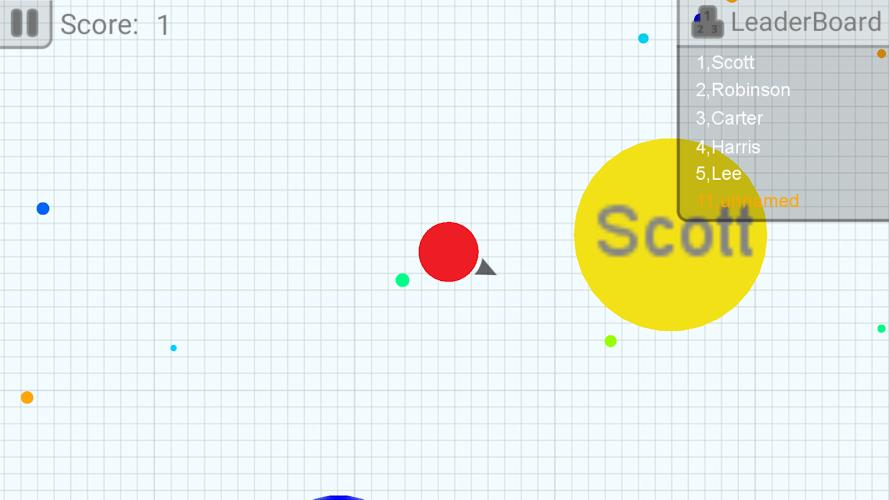
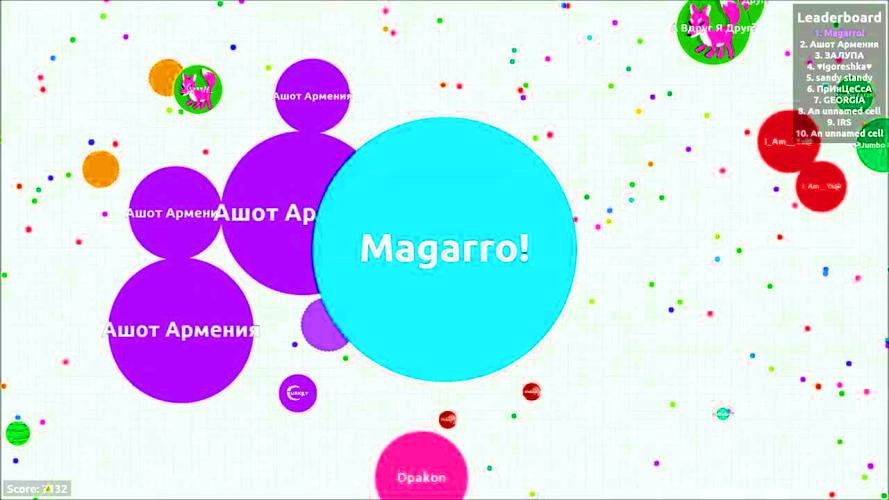
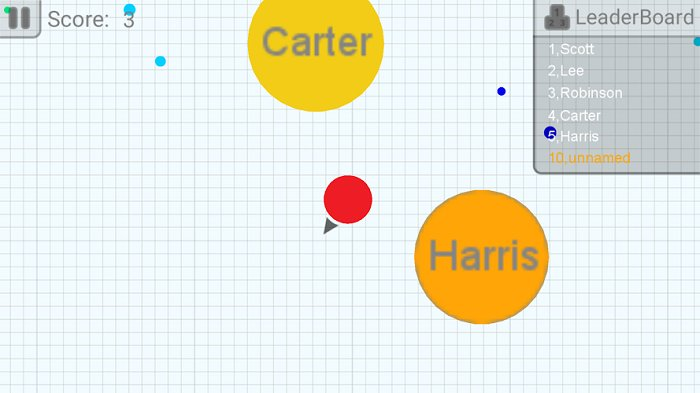
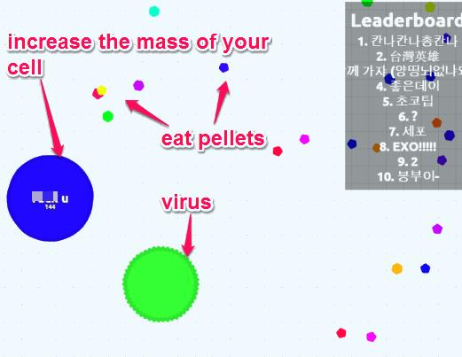
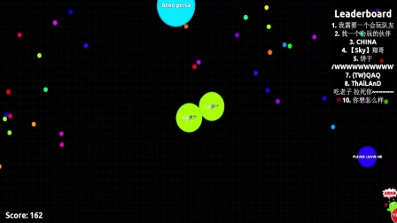
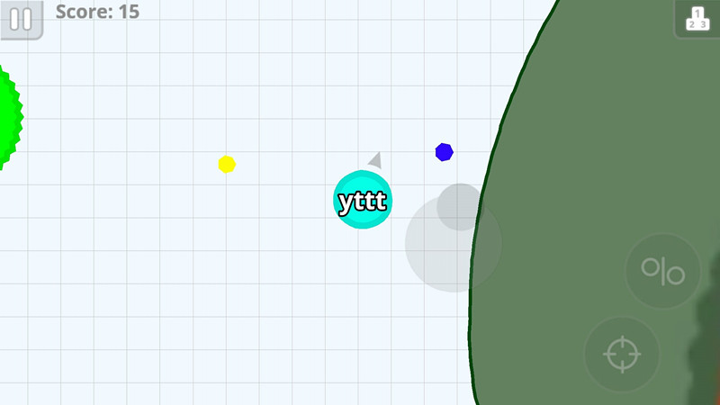

Agar.io is a massively multiplayer online game where players control a cell in a petri dish-themed world. The goal is to eat agar (the small dots) and consume smaller cells to grow while avoiding being eaten by larger ones. This guide covers everything from basic controls to advanced strategies that will help you climb the leaderboards.
🎯 Game Basics


Objective
Your goal is simple: grow as large as possible by consuming agar (small green pellets) and smaller cells while avoiding larger ones. The game ends when a bigger cell consumes you.
The Food System
- Agar pellets - Small green dots scattered across the map. Safe to eat, but slow growth.
- Mass - Your cell's size, measured in mass units. You need 10x mass to consume another player.
- Leaderboard - Shows top 10 players by mass. Your goal is to reach #1.
Game Modes
- Free Play - Standard mode, play with everyone
- Party Mode - Play with friends in a private room
- Experimental - Test new features and mechanics
🎮 Controls & Mechanics

Mouse Controls
Your cell follows your mouse cursor. The closer your cursor is to your cell, the slower you move. Position your cursor farther away to increase speed.
Keyboard Shortcuts
- Space - Split your cell into two smaller cells (requires 35+ mass)
- W - Eject mass (drop a small piece that others can eat)
- E - Feed your team members (in team mode)
Speed decreases as your cell grows. A massive cell moves very slowly and is vulnerable to being outmaneuvered by smaller, faster cells.
🌱 Beginner Strategies

1. Stay Near Food Clusters
Look for areas with high agar concentration. These spots provide faster growth and keep you moving, reducing the chance of being cornered by predators.
2. Know When to Run
The most important beginner skill is knowing when to flee. If you see a cell significantly larger than you, don't wait—move away immediately. Pride isn't worth losing your progress.
3. Use the Borders
The map edges (border) are safe zones. Larger cells have trouble trapping you because they move slowly. Just be careful—a cell slightly bigger than you can still catch you near the border.
4. Don't Chase Small Cells
If a cell is only slightly smaller than you, the chase often isn't worth it. You'll waste time and energy while other predators notice you.
⚡ Intermediate Tactics

1. The Split and Consume
When you're significantly larger than nearby cells, use Space to split. This creates two cells that can each consume smaller targets. After eating, the cells will slowly merge back together.
2. Positioning Matters
Learn to position yourself between food sources and potential threats. If you're larger, put yourself between smaller cells and escape routes. If you're smaller, stay near larger cells that might eat your predators.
3. Baiting Technique
Drop small amounts of mass (W key) to bait smaller cells. When they come to eat your bait, they're vulnerable to being consumed by you or nearby teammates.
4. Map Awareness
Keep an eye on the minimap. It shows the general location of major cells. Plan your movements based on where the big players are.
🚀 Advanced Techniques

1. The Blob Pop
When a large cell chases you, let it get close, then split multiple times. The pursuing cell may accidentally pop some of its own mass by eating your scattered smaller cells, weakening it for your counter-attack.
2. Chain Splitting
Rapidly press Space to create multiple small cells. While risky, this allows you to cover more area and consume multiple targets quickly. Use with caution—more cells mean more vulnerability.
3. Edge Control
Advanced players control the flow of the game by positioning at strategic points. Force other cells to come to you rather than chasing. This conserves energy and reduces risk.
4. Team Play Strategies
In team mode:
- Feed teammates mass so they can grow faster
- Larger cells should protect smaller teammates
- Coordinate splits to trap enemy cells
- Share the leaderboard—one player on top helps everyone

💎 Pro Tips
Never stay still. Even when you're huge, keep moving. Stationary cells are easy targets for coordinated attacks.
Watch the leaderboard changes. If someone suddenly drops from #1, they likely died. The player who killed them is now massive and hungry—avoid that area.
Control your camera zoom. Use the scroll wheel to zoom out when you're large, helping you see threats approaching from all directions.
Play during off-peak hours. Less competition means easier leaderboard climbs. Early mornings (UTC time) are typically quieter.
❓ Frequently Asked Questions
How do I get to #1 on the leaderboard?
Reaching #1 requires a combination of skill, patience, and sometimes luck. Focus on consistent growth, avoid risky plays, and capitalize on opportunities when larger cells die nearby.
What's the maximum cell size?
There's no hard cap, but the practical maximum is around 10,000-15,000 mass due to server limitations and gameplay balance. Beyond that, movement becomes extremely slow.
Can I play Agar.io with friends?
Yes! Create a party by going to the party section. Share the party code with friends to play together. Team mode also allows coordinated play with random teammates.
Why do I keep dying?
Common reasons include: chasing cells too close to your size, not watching the minimap, staying in one place too long, and underestimating smaller split cells.
Is there a way to hide my name?
Yes, simply don't enter a name when joining. You'll appear as a colorless cell with no name, useful for ambush tactics.
Do skins give any advantage?
No, skins are purely cosmetic. They don't affect gameplay, speed, or any other game mechanics.
📝 Conclusion
Agar.io is a game of risk and reward. The strategies in this guide will help you make smarter decisions and grow more efficiently. Remember: patience is key, and every expert was once a beginner.
Ready to put these tips into practice? Jump into a game and try these techniques. Good luck, and may your cells grow ever larger!
Last updated: January 20, 2024
Written by the iogameguide.com team